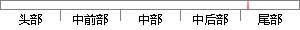

在工作量证明中，其他节点通过检查区块的散列是否小于给定的数字来检验区块的有效性。
片段位置图

相似结果|
相似片段 1：向其已连接的其他节点广播新区块的消息。节点在进行工作量证明计算的过程中收到新区块的消息，如验证通过，则放29弃正在进行的工作量证明计算，并检查是否有与新区块中相同的文章，如有则将其剔除，然后以新的区块为基准重新开始工作量证明计算。
|
※ 片段修改建议 ※
近似词参考：- 证明：证实
- 通过：经由过程
- 检查：查抄 搜检
- 是否：是不是
- 检验：查验 检讨 检修 磨练
系统自动生成语句：在工作量证实中，其他节点经由过程查抄区块的散列是不是小于给定的数字来查验区块的有效性。
注：本片段修改建议为系统自动生成，仅供参考。